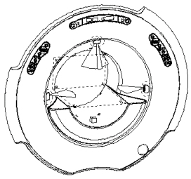
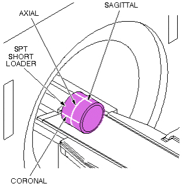

Operating Documentation
Direction 5133315-3, Rev# 14
Signa EXCITE HD 1.5T Service Methods
Module Version 1.0, Version Date 5/3/07
Operating Documentation |
| Required Persons | Preliminary Reqs | Procedure | Finalization |
|---|---|---|---|
| 1 | Not Applicable | 30 mins | Not Applicable |
The three laser lights, mounted on the front face of the magnet bore, are pre-adjusted at the factory and do not normally require realignment after the initial installation alignment procedures are completed.
| NOTE: | SPT Cylinder Availability - The SPT Short Loader Cylinder is part of the SPT Short Loader Assembly (2125244). This hardware, though shipped with Signa systems, is the property of GE. It is available for customer purchase. |
| Item | Qty | Effectivity | Part# | Manufacturer | |
|---|---|---|---|---|---|
| SPT Short Loader Cylinder | 1 | - | 2135652 | - | |
Place SPT Short Loader Cylinder on patient table.
Press Align On button on magnet enclosure.
In the event that the laser beams are not aligned as shown in Illustration 1 and Illustration 2, refer to Laser Light Alignment Procedures.
Illustration 1: CHECKING ALIGNMENT LIGHTS

Illustration 2: WRAP-AROUND BEAM PATTERN

No finalization steps.